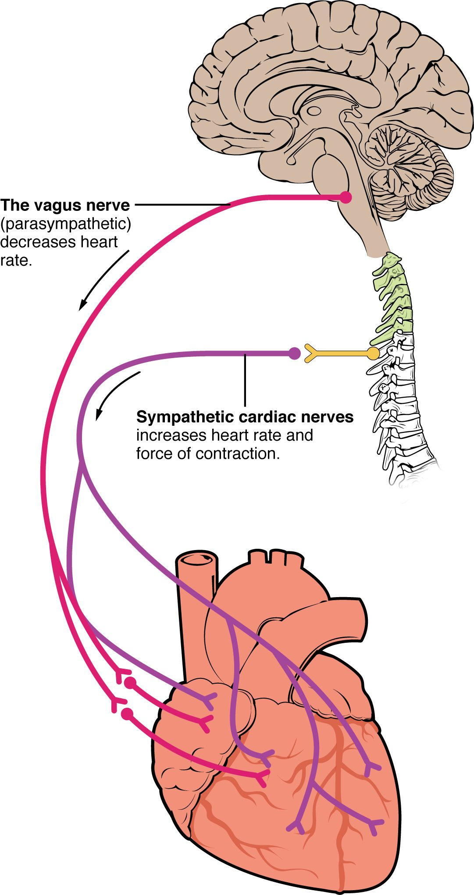

Cardiac output and its control
1Why this matters
Mrs. Haddad, 81, is brought in dizzy and pale. Her pulse is 36 beats per minute. Her heart muscle is healthy and each beat ejects a normal volume, yet she is barely perfusing her brain. The fix is not to make her heart squeeze harder: it is to make it beat faster. To see why, you need the equation that ties heart rate and stroke volume to the blood your heart delivers each minute.
2What this builds on
3Quick check before you start
1. A ventricle's end-diastolic volume is 120 mL and its end-systolic volume is 50 mL. What is its stroke volume?
- 170 mL
- 70 mL
- 2.4 mL
Show the answer
Stroke volume is the volume ejected in one beat: EDV − ESV = 120 − 50 = 70 mL.
- 170 mL:
- Correct: 70 mL:
- 2.4 mL:
2. What sets the rate at which the SA node fires?
- How fast its pacemaker potential climbs to threshold
- How strongly the ventricles contract
- The volume of blood in the atria
Show the answer
SA node cells drift up to threshold on their own. The steeper that pacemaker potential, the sooner each action potential fires and the faster the heart rate.
- Correct: How fast its pacemaker potential climbs to threshold:
- How strongly the ventricles contract:
- The volume of blood in the atria:
3. Which neurotransmitter do parasympathetic fibers of the vagus nerve release onto the heart?
- Norepinephrine
- Epinephrine
- Acetylcholine
Show the answer
Parasympathetic postganglionic fibers are cholinergic: they release acetylcholine, which acts on muscarinic receptor proteins.
- Norepinephrine:
- Epinephrine:
- Correct: Acetylcholine:
4Anatomy

With labels hidden, select a box to reveal its label.
5How it works, step by step
- More blood returns to the heart through the veins (greater venous return).The ventricle fills more during diastole, so end-diastolic volume rises and its muscle is stretched further (greater preload).
- Stretch moves the cardiac sarcomeres toward optimal length and makes troponin more sensitive to calcium.The same calcium release switches on more cross-bridges, so the next contraction is stronger.
- The stronger contraction ejects more of the blood in the ventricle.Stroke volume rises: this is the Frank–Starling mechanism.
- Stroke volume has risen while heart rate is unchanged.Cardiac output, HR × SV, rises, and the extra blood reaches the other ventricle, which fills more and matches it within a few beats.
6Core concepts
7A common mistake
The wrong idea: A faster heart rate always increases cardiac output.
What actually happens: Cardiac output is heart rate times stroke volume, and faster rates shorten diastole most. At very high rates the ventricles do not have time to fill, so stroke volume falls further than heart rate rises. A heart beating 220 times a minute can pump less than one beating 180 times a minute.
8Check yourself
Anything you miss goes into your review queue.
1. A patient's heart rate is 80 beats/min and his stroke volume is 65 mL. What is his cardiac output?
- 145 mL/min
- 5.2 L/min
- 1.2 L/min
- 52 L/min
Show the answer
CO = HR × SV = 80 beats/min × 65 mL/beat = 5,200 mL/min = 5.2 L/min.
- 145 mL/min: 145 comes from adding heart rate and stroke volume. Cardiac output is their product.
- Correct: 5.2 L/min: Correct. 80 × 65 = 5,200 mL/min, which is 5.2 L/min.
- 1.2 L/min: 1.2 L/min comes from dividing heart rate by stroke volume (80 ÷ 65). Multiply them instead.
- 52 L/min: 52 L/min is ten times too large: 5,200 mL is 5.2 L, not 52 L.
2. A patient starts taking a beta blocker, a drug that blocks beta-1 adrenergic receptor proteins in the heart. Predict the change in each variable at rest, compared with before the drug.
| Variable | Change |
|---|---|
| Heart rate | — |
| Contractility | — |
| Filling time | — |
| Cardiac output | — |
Show the answer
A beta blocker removes the sympathetic push on both the SA node and the ventricular muscle. Heart rate and contractility fall. Longer diastoles improve filling a little, which partly offsets the fall in stroke volume, but cardiac output ends up lower.
- Heart rate: down. With beta-1 receptor proteins blocked, norepinephrine cannot steepen the pacemaker potential, so the SA node reaches threshold more slowly.
- Contractility: down. Blocking beta-1 receptor proteins on ventricular cells lowers cyclic AMP, so less calcium enters through L-type channels and less is released from the sarcoplasmic reticulum.
- Filling time: up. A slower heart rate lengthens each diastole, so the ventricles have longer to fill.
- Cardiac output: down. Heart rate falls, and the slightly better filling does not fully make up for it and for the weaker contraction, so the product HR × SV falls.
3. Compare the resting trace with the sympathetic stimulation trace. What change in the SA node cell raises the heart rate?
- The threshold is lowered to a more negative value
- Each action potential lasts longer
- The pacemaker potential climbs to threshold faster
- The peak of each action potential reaches a higher voltage
Show the answer
Norepinephrine on beta-1 receptor proteins increases the funny current and calcium entry, so the pacemaker potential is steeper and reaches threshold sooner. More action potentials fit into each second, so heart rate rises.
- The threshold is lowered to a more negative value: The dashed threshold line sits at the same level, about minus 40 mV, in all three traces.
- Each action potential lasts longer: The action potentials are not longer in the sympathetic trace; there are simply more of them in the same time.
- Correct: The pacemaker potential climbs to threshold faster: Correct. A faster climb to threshold means more frequent firing.
- The peak of each action potential reaches a higher voltage: The peaks reach about the same height in all three traces. Peak height does not set the rate.
4. Why does stretching a ventricle during filling make its next contraction stronger?
- It triggers a sympathetic reflex that releases norepinephrine onto the ventricle
- It improves filament overlap and troponin's calcium sensitivity
- It opens extra L-type calcium channels, letting more calcium in
- It lengthens the action potential's plateau phase in every cell
Show the answer
Resting cardiac sarcomeres are shorter than optimal. Stretch brings them closer to optimal overlap, and it makes troponin bind calcium more readily, so the same calcium release switches on more cross-bridges. This is the Frank–Starling mechanism, and it works even in a heart with no nerve supply.
- It triggers a sympathetic reflex that releases norepinephrine onto the ventricle: The Frank–Starling mechanism needs no nerves or hormones; it works in an isolated heart. A sympathetic effect would be a change in contractility, a different curve.
- Correct: It improves filament overlap and troponin's calcium sensitivity: Correct. Better overlap and greater calcium sensitivity explain the stronger contraction.
- It opens extra L-type calcium channels, letting more calcium in: The main effect of stretch is on how the contractile proteins respond to calcium, not on how much calcium enters through L-type channels.
- It lengthens the action potential's plateau phase in every cell: The strength of contraction depends on how many cross-bridges are active, not mainly on how long the plateau lasts.
5. Mr. Liu's aortic valve has narrowed and stiffened, so his left ventricle must generate a much higher pressure to eject blood. Which volume changes first, and which way?
- End-diastolic volume falls
- End-systolic volume falls
- End-systolic volume rises
- End-diastolic volume rises
Show the answer
A narrowed aortic valve raises afterload. The ventricle spends longer building pressure before ejection, less contraction is left for ejecting, and more blood remains at the end of systole: ESV rises and stroke volume falls.
- End-diastolic volume falls: Filling happens through the mitral valve during diastole. Afterload acts during ejection, so its first effect is on how much is left, not how much comes in.
- End-systolic volume falls: The ventricle does work harder, but against a higher pressure it ejects less, not more. ESV falls only if contractility rises enough to overcome the load.
- Correct: End-systolic volume rises: Correct. Higher afterload leaves more blood in the ventricle after ejection.
- End-diastolic volume rises: The question describes a narrowed valve, not a leaking one. Backflow would be a different problem.
6. A patient's heart rate is 38 beats/min, and she feels faint. A paramedic gives atropine, a drug that blocks muscarinic receptor proteins. What happens to her heart rate?
- It falls
- It rises
- It stays the same
Show the answer
The vagus nerve releases acetylcholine onto muscarinic receptor proteins on SA node cells, which slows the pacemaker potential. Blocking those receptor proteins removes vagal tone, so the pacemaker potential climbs faster and heart rate rises toward the SA node's own rate.
- It falls: A fall would need more vagal effect or less sympathetic effect. Atropine removes vagal effect, and it does not block the beta-1 receptor proteins that carry sympathetic signals.
- Correct: It rises: Correct. Atropine blocks the muscarinic receptor proteins through which the vagus slows the SA node, so the pacemaker potential climbs faster.
- It stays the same: The SA node does carry muscarinic receptor proteins; that is how the vagus nerve slows it. Blocking them removes vagal tone and changes the rate.
7. An abnormal rhythm raises a patient's heart rate from 180 to 220 beats/min, and his cardiac output falls from 5.4 to 4.4 L/min. What best explains the fall?
- The SA node is exhausted and fires weaker impulses
- Filling time is too short for the ventricles to fill
- Afterload rises sharply at fast heart rates
- The ventricles contract too forcefully
Show the answer
Most of the shortening at fast rates comes out of diastole. At 220 beats/min, filling time is so short that EDV and stroke volume collapse. Stroke volume fell by a third while heart rate rose by only a fifth, so HR × SV fell.
- The SA node is exhausted and fires weaker impulses: SA node action potentials are all-or-none and do not weaken. Here the rhythm is fast because impulses are frequent, not weak.
- Correct: Filling time is too short for the ventricles to fill: Correct. Filling time limits stroke volume at very high heart rates.
- Afterload rises sharply at fast heart rates: Afterload depends on arterial pressure, which does not rise because of the rate itself. The problem is filling, not ejection.
- The ventricles contract too forcefully: Nothing in the scenario suggests forceful contraction; a smaller stroke volume shows the opposite.
8. After a heart transplant, a patient's new heart has no nerve connections to his brain. When he starts walking briskly, his cardiac output still rises, though more slowly than before. Which pair of mechanisms can explain the rise?
- The Frank–Starling mechanism and adrenal epinephrine
- The vagus nerve and the cardioaccelerator center
- Sympathetic nerves in the cardiac plexus and acetylcholine
- The cardioinhibitory center and a longer filling time
Show the answer
Walking increases venous return through the muscle pump, so the transplanted heart fills more and ejects more by the Frank–Starling mechanism, which needs no nerves. Epinephrine released into the blood by the adrenal medulla reaches the heart's beta-1 receptor proteins and raises heart rate and contractility. The hormone takes time to build up, which is why the rise is slower.
- Correct: The Frank–Starling mechanism and adrenal epinephrine: Correct. Stretch and a blood-borne hormone both work without nerves.
- The vagus nerve and the cardioaccelerator center: The vagus nerve and the cardioaccelerator center both act through nerves, which the transplanted heart lacks.
- Sympathetic nerves in the cardiac plexus and acetylcholine: The cardiac plexus nerves were cut during the transplant, and acetylcholine from the vagus would slow the heart rather than raise output.
- The cardioinhibitory center and a longer filling time: The cardioinhibitory center acts through the vagus nerve, which is cut. A longer filling time would come from a slower rate, which is not what happens.
9Summary
Cardiac output is the volume one ventricle pumps each minute: CO = HR × SV, about 5 L/min at rest. Stroke volume is set by preload, the stretch at the end of filling, which depends on venous return and filling time; by contractility, the strength of contraction at a given stretch, raised by sympathetic stimulation through beta-1 receptor proteins and calcium; and by afterload, the pressure the ventricle must overcome to eject. Through the Frank–Starling mechanism, more filling produces a stronger contraction, which keeps the two ventricles matched. Heart rate is set by the cardiovascular center in the medulla oblongata: the cardioaccelerator center speeds the SA node through sympathetic nerves and the cardiac plexus, and the cardioinhibitory center slows it through the vagus nerves. Very fast rates cut filling time and can lower output. Cardiac reserve is the gap between highest and resting cardiac output.